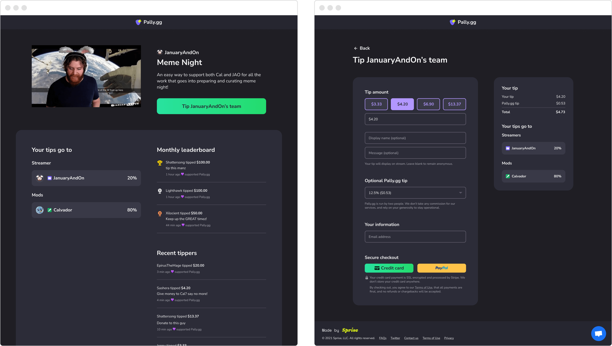

The tip page is the core of the product, where viewers can leave a tip with a message, and see how funds are split amongst the team.
Deeply understanding customer needs
Seeing the content creator space as a growing market, we wanted to build something specifically in the streaming niche.
Originally, we set out to make a productivity tool for moderators, as they were an underserved group in the streaming community. However, as we talked to more and more mods, we learned that most didn’t want the job to feel like work and this accomplished just that.
Most mods are volunteers who ended up in the role organically, by being high-quality contributors to the community. As a streamer grows, mod workloads become increasingly demanding, to the point where the lines blur between volunteering and an unpaid job.
Many streamers are aware of this—and even feel guilty about it—but they aren’t in a financial position to start paying their team wages. Add in the administrative headaches and tax consequences of having paid contractors, and it becomes an overwhelming proposition.
Creators love the product so much, they'd talk about it themselves. Payments on the platform becomecontent, which we were able to use as organic, in-product marketing content (with their permission).
A major portion of streamers’ revenue comes directly from their viewers, in the form of channel subscribers and tips. In every case, this money goes directly to the streamer. The idea that tips could be split opened up many opportunities to turn creator payments into a multiplayer experience.
When we presented this idea, both mods and streamers would get excited. They started talking about all the ways they could use it—a notable shift from our earlier conversations. We decided to pivot.
Users would often tweet about Pally after their first experience, which we collected and displayed as social proof on our homepage.
Making our first dollar
Discovery calls are great, but we needed to find our first customer. We scoured social media for streamers who talked about paying mods, eventually finding someone on Reddit who was passionate about the topic. We sent him a message, expecting nothing. To our surprise, he said, “let’s run a fundraiser this weekend.”
We didn’t even have a product! So we told him we’d have something ready in two weeks, and by the second weekend, we had scrapped together a working MVP. It was as scrappy as could be—a checkout page to receive tips, and a basic on-stream alert that would show on the streamer’s broadcast. The rest of the product was us manually operating out of a spreadsheet.
Where Pally went from zero to one. Our very first customer, on his first stream using Pally. The first version of our product had two pages: a tip feed and checkout page.
To focus on time-to-value for our customers, the initial MVP was as scrappy as possible. After a user received tips, we manually calculated their tip splits and payouts in a spreadsheet.
One customer to many
With a working MVP, we needed to validate the concept further. We seeded a pipeline of leads by finding streamers who ran charity fundraisers, and cold emailed them, thinking that if they were generous enough to do that, they’d be more likely to run a campaign for their own mods. It worked. After enough cold emails (hundreds), we had a couple dozen prospects signed up.
On the product side, everything was still incredibly scrappy, with a lot of unscalable work being done. We shipped a landing page with a basic sign up form, which put them into an “early access” queue. There was no self-signup flow yet, so each team’s tip page was manually created by entering rows into a database, and often required some email back-and-forth. We’d manually calculate the splits for each tip, then send users their payouts one by one.
Evolution of the dashboard over time, as we added more features.
In the meantime, we tried to get onto discovery calls with each prospect and learn as much as possible. We also set up a Discord server and funneled users there, to establish a community space and engage with users who had any questions. These tactics proved to be greatly effective, in that they both established trust with these early creators, and their feedback gave us a clear product roadmap to build on.
Beginning to scale
One afternoon, our Twitter notifications started blowing up. We realized a creator tweeted excitedly about our platform, and it started to go viral! This started a snowball of demand, as streamers and mods started signing up and tweeting about us. We had enough momentum that we were getting organic sign-ups daily, faster than we could keep up with. This was a huge breakthrough—it was clear that our product solved a real pain point for people, and they wanted to use it.
We prioritized getting this backlog of users onto the platform by implementing a self-signup flow. It wasn’t perfect, but with learnings from our original early access form, we were able to get users live without needing to interact with them first.
The start of the creator sign up flow. If they sign up with Twitch, we can pre-fill their account details: username display name, and profile picture. If they prefer to log in with email and password, they can connect their Twitch account afterwards.
Users were categorized into two groups: creators, who were the owners of the page, and team members joining to receive a split of the funds. After a creator set up their page, they could invite their team members, and set up their split. Once everyone had joined, they could go live and immediately receive funds. Users with an account joining other teams simply needed to log in after receiving an invite link, and they were done.
We iterated to have users connect their PayPal account, which was key to allow us to automate payouts. It also reduced fraud and prevented errors caused by users entering an incorrect PayPal email address.
Over time, we iterated and improved this process:
- We simplified account creation by allowing users to sign up using their Twitch account via OAuth. As we required creators to link their Twitch account anyway, creators who went this path could skip that step.
- We improved security and reduced operational overhead by having users connect their PayPal account. In the original MVP, this was just an input field for a PayPal email address, which would often lead to errors.
- We added an onboarding guide for creators, to give them clear next steps, and encourage them to use features that would optimize their performance while waiting for their team member to join.
After creating a tip page, creators can invite up to 14 other teammates, organize them into categories, and customize their tip splits to their liking.
Additional design explorations for editing tip splits.
Balancing customer feedback
One of the hardest things in iterating a product is being disciplined enough to know what not to build, as much as what to build. We got so much feedback, and many, many ideas from our community. This is a double edged sword—if we implemented everything, we’d end up with an unfocused product. Users need to know what problem your product solves, and it can’t be “everything”.
We had to stay dedicated to our core vision: that we made streamer payments a multiplayer experience.
For us, finding the right balance in giving creators customization tools meant answering a few questions:
- How much effort would this take to build?
- How does this feature incentivize more tips?
- Would not having this feature be a deal-breaker for streamers?
Reflections: building grit to overcome obstacles
For nearly six months, we were manually calculating user payouts in spreadsheets, and sending them through the PayPal interface. This grew to become a dreaded, incredibly time-consuming process. We paid users out every Monday. It would take hours. We knew we needed to automate.
The harsh reality of building on top of another payments platform is the platform risk. We needed access to PayPal’s Mass Pay feature, which gave us an API to automatically process user payouts. However, this feature was locked behind a gate, and required approval from PayPal to build on top of.
We applied, and heard nothing back. We followed up. Crickets.
Sometimes, as a founder, you need to do what it takes to survive. For us, that meant pulling out all the stops, and doing mundane, energy-draining work. We utilized any source of leverage we could find—we reached out to every single person we knew who had any sort of connection to PayPal, scoured LinkedIn and cold DMed second and third connections, and called PayPal every day, sitting on hold for hours.
This took us months, but through sheer will and persistence, we got through and built the feature. It was very unsexy, but I’m proud of that. It was a great lesson in grit: sometimes, there’s no clever “hack,” you just have to keep doing the thing you don’t want to, and you don’t give up until you overcome the obstacle.